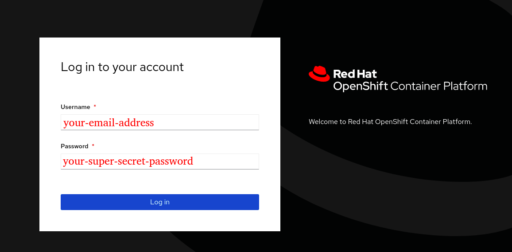

Openshift 4 Introduction - Labs
Lab 0 - Warming up
| This is not a recommended practices guide nor intended to serve as a reference. These series of labs are oriented in such a way that you will have a first contact to the main concepts and how certain changes affects to the state of an application deployment. |
In this preparation lab, we are going to introduce the Openshift web console, get the oc cli binary, and finally, validate that all necessary requirements are successfully accomplished before starting the series of labs.
Along these labs, you will refer to a list of variables that have been shared with you before starting the labs. If this is not your case, please let us know.
These variables are:
-
$OCP_CONSOLE: url for accessing to the Openshift web console
-
$OCP_API: Openshift API endpoint. We will use this endpoint when accesing the cluster from the
occli. -
$USER: your private user id used for Openshift authentication
-
$PASSWORD: your secret password used for Openshift authentication
Feel free to export these variables in your environment.
There is also a list of files needed to run the labs. These files can be found in the following github repository:
Clone the repository to your desired location, that will then be referred as $LABS_HOME during the labs:
$ git clone https://github.com/dsanchor/ocp-intro-dev.git $LABS_HOME
1. Access to Openshift Web Console
Use the $OCP_CONSOLE url to acces the Openshift Web Console.
A login screen will be shown as follow:


Enter your username and password and click Log In.
If you have successfully logged in, you will arrive to the main dashboard with your current projects. As seen below, the list of projects should be empty:

We will soon create our first project, but now, it is time to get the Openshift CLI binaries for your specific OS.
⇒ Additional reads: Web Console
1.1. Download the CLI
On the top-right (?) menu, click on Command line tools:

Then, choose the binaries according to your OS:

Extract the binaries and try it by executing the following:
$ oc version Client Version: openshift-clients-4.6.0-202006250705.p0-176-g5797eaeca Server Version: 4.6.15 Kubernetes Version: v1.19.0+1833054
The above is an example of what you should get when running the command.
1.2. Login to Openshift using oc
Once we have the oc cli tool installed, we will first log in into the platform by running:
Notice that we are using the $VARS we mentioned at the beggining of the labs. If you have not exported them, you will need to manually replace them below.
oc login -u $USER -p $PASSWORD $OCP_API
Login successful.
You don't have any projects. You can try to create a new project, by running
oc new-project <projectname>
There is not any project yet, so let’s create it.
2. Create your first project
A project allows a community of users to organize and manage their content in isolation from others.
In our labs, you will deploy the demo application and related into your own project.
Also notice that sometimes we talk about namespaces, which is the Kubernetes concept and others about projects. A project is a Kubernetes namespace with additional annotations.
⇒ Additional reads: working with projects
We are now ready to create our first project by running:
$ oc new-project <YOUR_PROJECT>
Now using project "user0" on server "https://api.labs.sandbox779.opentlc.com:6443".
You can add applications to this project with the 'new-app' command. For example, try:
oc new-app rails-postgresql-example
to build a new example application in Ruby. Or use kubectl to deploy a simple Kubernetes application:
kubectl create deployment hello-node --image=k8s.gcr.io/serve_hostname
Well done! :-)
If you now move to the Openshift Console, under the Administrator view, you will notice that you have a new Project:

We can now start deploying applications into our project.
Lab 1 - First application deployment
Once this lab is completed, we will have successfully deployed our first application and we will also have made it externally accesible.
The main goals of this lab is to understand some core concepts such as:
1. Brief application description
The application that we are going to use during these labs is called Pet clinic. It has been used in different workshops in Red Hat.
In our case, we have made some modifications to make it more appropiate to certain use cases we wanted to show during the labs.
Next diagram describes the 3 layer application architecture:

It basically manage set of Pets, their Owners and Veterinarians appointments. We will play a bit when needed in the labs.
Source code is available here.
| As these labs are not intended to be a development nor Quarkus workshop, I will not give more details about the application itself unless they are related to Openshift integration. |
2. Deploy application
There are many ways of performing our first deployment (web console, cli options and so on), but I want to start by creating the first deployment using the YAML descriptor.
Let’s have a look at the full YAML file first:
kind: Deployment
apiVersion: apps/v1
metadata:
name: quarkus-petclinic
labels:
app: quarkus-petclinic
spec:
replicas: 1
selector:
matchLabels:
app: quarkus-petclinic
strategy:
type: RollingUpdate
rollingUpdate:
maxUnavailable: 25%
maxSurge: 25%
revisionHistoryLimit: 10
progressDeadlineSeconds: 600
template:
metadata:
labels:
app: quarkus-petclinic
deployment: quarkus-petclinic
spec:
containers:
- name: quarkus-petclinic
image: 'quay.io/dsanchor/quarkus-petclinic:in-mem'
ports:
- containerPort: 8080
protocol: TCP
resources: {}
imagePullPolicy: AlwaysLet’s focus on each individual parts:
First part, there is basically the kind and apiVersion for a Deployment API object and then, we just add a name and a set of labels under metadata:

Next, we have the spec part of the object. This is where we basically define the desired state of our Deployment.
Grouping some parts of it, we have:

-
Number of desired pods managed by this
Deploymentand itsReplicaSet -
Selector, that will basically tell which pods are managed by the
ReplicaSet. -
Deployment strategy, which set how pods are created/destroy during update process.
And finally the template definition, that describes how a pod will look like:

We will see more details about every part of the pod itself while going through the labs.
2.1. Create our first deployment in your project
As said, we will apply the YAML descriptor into our project. To do so, execute:
$ oc apply -f $LABS_HOME/lab1/app-deployment.yaml -n <YOUR_PROJECT> deployment.apps/quarkus-petclinic created
You can move to one project to another with oc project <PROJECT> and there is no need to add the extra -n <PROJECT> to perform actions over the current project, although when having many projects, the -n option will give you the peace and serenity about being doing stuff where you really want to :-)
|
Let’s also have a look at what has been created already in our project:
$ oc get all -n <YOUR_PROJECT> NAME READY STATUS RESTARTS AGE pod/quarkus-petclinic-7cdcd76595-vrbd2 1/1 Running 0 2m33s NAME READY UP-TO-DATE AVAILABLE AGE deployment.apps/quarkus-petclinic 1/1 1 1 2m33s NAME DESIRED CURRENT READY AGE replicaset.apps/quarkus-petclinic-7cdcd76595 1 1 1 2m33s
We have not only a Deployment but a ReplicaSet and a single Pod.
By creating a Deployment, a ReplicaSet has been created in order to ensure that the specified number of pods are running at a given moment in time.
Let’s move to the console and see what we have. This time, we will use the Developer view. Select that perspective on the left top corner:

If you click on the blue circle (2), you will get all details about the application (3).
As you can tell, there is not any Service nor Route created for it yet. That means, this application is just locally accesible if you would know the pod ip (unprobable.. and undesired).
Click on the pod link (4) and get a terminal screen within that pod:

To test the application locally, execute the following in the terminal:
$ curl -v localhost:8080 | grep 200
In case you did not get a HTTP/1.1 200 OK response, let us know.
|
2.2. Add a service to your application
Once we tested the application, lets add a Service that will provide us a logical name to access to this application. It will also be used as a load balancer for the possible 'n' pods we may have later for this Deployment.
$ oc apply -f $LABS_HOME/lab1/app-service.yaml -n <YOUR_PROJECT> service/quarkus-petclinic created
Alternatively, you could have ran the next oc command:
oc expose deployment/quarkus-petclinic --port=8080 -n <YOUR_PROJECT>
Feel free to run again a oc get all to see that the service has been successfully created.
Also, if you move back to the console, you will notice that the service is "assigned" to the application:

Test the application again from the pod terminal, but this time use the service name instead:
$ curl -v quarkus-petclinic:8080 | grep 200
Hope you got a HTTP/1.1 200 OK! If that is the case, let’s make our application externally acessible by adding a route.
2.3. Create a route
Apply the following YAML in your project:
$ oc apply -f $LABS_HOME/lab1/app-route.yaml -n <YOUR_PROJECT> route.route.openshift.io/quarkus-petclinic created
As previously mentioned for services, you could use the oc expose command:
oc expose svc/quarkus-petclinic -n <YOUR_PROJECT>
It is then time to access to our application using a web browser. To do so, let’s first get the host where this application is exposed:
$ oc get route -n <YOUR_PROJECT> NAME HOST/PORT PATH SERVICES PORT TERMINATION WILDCARD quarkus-petclinic quarkus-petclinic-user0.apps.labs.sandbox779.opentlc.com quarkus-petclinic 8080-tcp None
Copy the value under HOST/PORT column in your preferred web browser. And then… there we go!

Congratulations! You have successfully deployed your first application.
Just a few considerations about the application. This application requires access to a DB in order to persist any change. In this lab, we used an in-memory H2 DB within our application.. so in case you add/remove pets, this changes are only persisted to that single pod.
You would also notice that in case you kill/delete the pod, those pets previously created would have been lost.
Feel free to perform these very usefull exercises to understand that pods are ephemeral.
But no worries, our pets deserve the best.. so will deploy a proper DB in the next lab and link the application pods to it.
Lab 2 - Complete application deployment
In previous lab, we have just deployed a single application without considering its requirements. We just wanted to have it running and play a bit with Openshift.
In this lab, we will deploy a Postgresql Database and we will update the application deployment image to ensure we don’t use an in-memory DB so we will link the application to the Postgresql DB instead.
1. Deploy and ephemeral Postgresql
This time, we will do the full deployment from the web console.
Let’s move to the console and select the Developer view.
As in next screenshot, first, ensure you are on the right project (it is very likely you are.. unless you have created more than one project), click on Add and select Database:

Then, select Postgresql ephemeral:

Yes.. we are going to deploy an ephemeral Postgresql… so in case the Postgresql pod is recreated we will lose the data. We will add a persistent volume later in these labs.
Click on Instantiate Template:

And set the following parameter values set in red (ensure you use those):

As a result, you should see both the application and postgresql pods running:

2. Connect application to Database
We have now the Postgresql pod running, but the application pod is not connected to it yet.
For that, we will deploy a new application image tag that has the proper configuration to connect to the DB (the application configuration is set in this application.properties file).
This approach of defining the configuration within the application (and then, inside the image) could be seen as not very Cloud Native… even when it is somehow set with profiles. To solve this, we will extract this configuration to a ConfigMap later on these labs.
|
It is time for deploy a new version of our application. To do so, we will only update the image in our existing deployment:
$ oc set image deployment/quarkus-petclinic *=quay.io/dsanchor/quarkus-petclinic:db -n <YOUR_PROJECT> deployment.apps/quarkus-petclinic image updated
Once the image has been updated, a new pod has been created, while the old one has been terminated. If you missed that process, here it is a short replay:

That list of pods could be seen under the Administrator view, then Workloads and finally Pods.
We can now test the application again. Feel free to add new owners, pets and so on, those new changes are now persisted in the Database. To validate this behavior, delete the existing application pod and validate that the data is still there when the new pod has been created.
3. Scale the application pod replicas
So far, we have just a single replica of our "Pet clinic" web site… That is not high available and fault tolerant at all.
Let’s scale it up to 3 replicas by running the next command:
oc scale deployment/quarkus-petclinic --replicas=3 -n <YOUR_PROJECT> deployment.apps/quarkus-petclinic scaled
You could now continue adding data from the web application, it does not matter from which pod you are accesing to the Database, the same data is accessible from all the application pods.
Feel free to scale it down and up again and check that the application works as expected and does not miss any data.
3.1. Extra: Rolling vs Recreate deployment strategy
Have a look at the following resources and then, answer a couple of questions that are related to this topic based on our scenario:
So.. could you have a look at what strategies are used in both the application and the Database? Why are they different?
Lab 3 - Adding persistent volumes
This lab will give you an overview about adding a persistence layer to any application that may require it, for instance, a Database.
In last lab, we have deployed an ephemeral Database, that means, in case the pod is recreated, any data previously stored will be lost.
Let’s fix this!!
1. Understanding storage
I would like you to spend some time to read the Openshift official documentation about storage and understand the main concepts around it: Understanding persistent storage.
Or in case you just want the basics for the lab, just read the following:
2. Setting persistent storage to the Database
Let’s now add persistent storage to the Postgresql Database we have deployed so we do not miss data in case our Database pod crashes or is recreated.
First, we will scale down to 0. You can use the web console or the oc. Here is the command:
$ oc scale dc/petclinic-database --replicas=0 -n <YOUR_PROJECT> deploymentconfig.apps.openshift.io/petclinic-database scaled
Now, edit the petclinic-database DeploymentConfig to remove any volume and volumeMount reference to avoid conflicts when adding new storage. Before removing, keep save somewhere the path related to the volume mount. You can manually edit the DeploymentConfig from the web console or by running:
oc edit dc/petclinic-database -n <YOUR_PROJECT>
Remove emptyDir volume:

Remove volume mount:

Let’s add storage now. Move to the Developer view and click on the Database application and then, Add storage:

Chose Create new claim and set the values according to next picture:

Scale the Database DeploymentConfig back to one replica:
$ oc scale dc/petclinic-database --replicas=1 -n <YOUR_PROJECT> deploymentconfig.apps.openshift.io/petclinic-database scaled
Do some extra checks:
-
Have a look at the new
DeploymentConfigvolume and volumeMount section -
Navigate to the
web consoleandstoragemenu and verify that thepvcappears as bound -
And try to get details about the
pv(No, you won’t get those details as your are not cluster administrator)
And also, test the application again. You will notice that we will get errors.. because the tables, relationships and data does not exist any more…
In order recreate our scheme, let’s scale down the application to 0 and then back to 1 (this is because the application will create the tables and relationships again based on its hibernate configuration):
$ oc scale deployment/quarkus-petclinic --replicas=0 -n <YOUR_PROJECT> deployment.apps/quarkus-petclinic scaled
And once there is no pods for the application, scale it up again:
$ oc scale deployment/quarkus-petclinic --replicas=1 -n <YOUR_PROJECT> deployment.apps/quarkus-petclinic scaled
And test the application… and list the owners. You should get a list of pre-created veterinarians :-)

From now on.. you will not lose your data anymore as it is backed by a PersistentVolume.
Lab 4 - Configuration management
In this lab, we will introduce the concepts of ConfigMap and Secrets and we will give some examples of how they can be used/consumed from any application.
1. Short introduction
Before continue to the labs, I highly encourage you to read the following (brief) documentation about:
2. ConfigMaps
As a summary of what you have read in the k8s documentation, we will use a ConfigMap to separate the configuration from the container image. This approach will give us the possibility of running the same image in different environments and inject completely different configuration values per environment.
In the next example I will use the the Terms and conditions tab in our "Pet clinic" web site to externalize the content of this legal text.
Before we start, let’s update the image that is used during this lab:
oc set image deployment/quarkus-petclinic *=quay.io/dsanchor/quarkus-petclinic:config -n <YOUR_PROJECT> deployment.apps/quarkus-petclinic image updated
I would also suggest to scale the application down to 1 replicas for debugging simplicity during the lab.
oc scale deployment/quarkus-petclinic --replicas=1 -n <YOUR_PROJECT> deployment.apps/quarkus-petclinic scaled
Back to the topic, the main difference with the other application versions is that, this version, will try to read from a /deployments/tcs.txt (as per defined in application configration) to load the content of the Terms and conditions text.
If you click now on the "T&Cs" tab, you will get a message like this one:

If you also check the pod logs, every time you click on "T&CS" tab, there will be a WARN log message:
WARN: no such file. Setting default T&Cs message
| you can also see the logs of your pod by running: oc get logs -f <POD> -n <YOUR_PROJECT> |
Let’s create our ConfigMap now:
oc create cm terms-and-conditions --from-literal=tcs.txt="My new tcs" -n <YOUR_PROJECT> configmap/terms-and-conditions created
You can also check the content from the web console:

And now, let’s mount this ConfigMap as volume in our pods by adding some configuration in the application Deployment:
oc set volume deployment/quarkus-petclinic --add --name=tcs -m /deployment -t configmap --configmap-name=terms-and-conditions -n <YOUR_PROJECT> deployment.apps/quarkus-petclinic volume update
What this command has added in our Deployment is:

If we now click on the "T&CS" tab, the content should be exactly the same of the one set in the ConfigMap and the WARN should have dissapeared from the pod logs:

What would happen if you modify the content of the ConfigMap? Are the 'T&CS' updated as well?
Feel free to try it your self. You could edit the ConfigMap manually from the web console or by running:
oc edit cm terms-and-conditions -n <YOUR_PROJECT>
Both Secrets and ConfigMaps could be mounted as volumes within pods.
Other approach that is valid in both cases is to consume the content of either Secrets or ConfigMaps as environment variables within pods.
We will see this last approach next with a Secret example.
3. Secrets
Compare to ConfigMaps, Secrets are used to store and manage sensitive data.
In this lab, we will just have a look at how the Postgresql application is using and consuming a given Secret that stores sensitive data such as the username, password and database name.
First of all, let’s have a look at the petclinic-database Secret using either the web console or the cli. I will use the cli, focusing only on the interesting part of the 'Secret'
$ oc get secret petclinic-database -o yaml -n <YOUR_PROJECT> apiVersion: v1 data: database-name: cGV0Y2xpbmlj database-password: bXlzZWNyZXRwYXNzd29yZA== database-user: cGV0Y2xpbmlj kind: Secret type: Opaque metadata: name: petclinic-database
Notice the main keys within the data part: database-name, database-password and database-user.
Now, let’s move to the postgresql DeploymentConfig and see how these keys are then referenced from the environment variables.
If we check it using the web console:

In the YAML descriptor, we can also clearly see how environments variables are set from the Secret:

4. Extra: how Quarkus (could) manage configuration
Once we have finished the whole lab, I would like to introduce you a different approach that is used by Quarkus in order to load/access ConfigMaps and Secrets.
As mentioned previously, some parts of the cofiguration has been profiled so that, we have different values for local development and production.
We would like to go a step further and show you how to make this application a Cloud Native one in terms of configuration.
Let me show it once we all have finished the lab.
Lab 5 - Resources
In next lab, we will introduce how to define resources in pods (memory and cpu), so that, the Kubernetes scheduler will use this information to place pods in the right nodes and also, to decide which pods are more likely to be evicted first based on its QoS (Quality of Service)
1. Requests and limits
Next paragraphs have been extracted from the official Kubernetes documentation. Summary is next.
When you specify the resource request for Containers in a Pod, the scheduler uses this information to decide which node to place the Pod on. When you specify a resource limit for a Container, the kubelet enforces those limits so that the running container is not allowed to use more of that resource than the limit you set. The kubelet also reserves at least the request amount of that system resource specifically for that container to use.
If the node where a Pod is running has enough of a resource available, it’s possible (and allowed) for a container to use more resource than its request for that resource specifies. However, a container is not allowed to use more than its resource limit.
For example, if you set a memory request of 256 MiB for a container, and that container is in a Pod scheduled to a Node with 8GiB of memory and no other Pods, then the container can try to use more RAM.
If you set a memory limit of 4GiB for that Container, the kubelet (and container runtime) enforce the limit. The runtime prevents the container from using more than the configured resource limit. For example: when a process in the container tries to consume more than the allowed amount of memory, the system kernel terminates the process that attempted the allocation, with an out of memory (OOM) error.
Limits can be implemented either reactively (the system intervenes once it sees a violation) or by enforcement (the system prevents the container from ever exceeding the limit). Different runtimes can have different ways to implement the same restrictions.
2. Quality of Service
Kubernetes provides different levels of Quality of Service to pods depending on what values for request and limits are set for them.
For each resource, containers specify a request, which is the amount of that resource that the system will guarantee to the container, and a limit which is the maximum amount that the system will allow the container to use.
Based on what values are in each case, we have the following QoS:

As the table shows (source CNCF), the QoS class of a pod does affect the order in which it is chosen for eviction by the Kubelet.
Kubelet first evicts BestEffort and Burstable pods using resources above requests. The order of eviction depends on the priority assigned to each pod and the amount of resources being consumed above request.
Guaranteed and Burstable pods not exceeding resource requests are evicted next based on which ones have the lowest priority.
Both Guaranteed and Burstable pods whose resource usage is lower than the requested amount are never evicted because of the resource usage of another pod. They might, however, be evicted if system daemons start using more resources than reserved. In this case, Guaranteed and Burstable pods with the lowest priority are evicted first.
3. Configure resources
Once we have understood the value of the different QoS and how resources could be configured, we will set two different kinds of 'QoS' as an example.
For the Postgresql Database, we will set Guaranteed resources, while we leave the application as Burstable.
Let’s start with the DB. We will use the oc cli in both cases. We will set 512m and 10 milicores:
$ oc set resources dc/petclinic-database --limits=cpu=10m,memory=512Mi --requests=cpu=10m,memory=512Mi -n <TOUR PROJECT> deploymentconfig.apps.openshift.io/petclinic-database resource requirements updated
And then, we will just define cpu and memory request in our application, so we let the application consume as much as the node can give to pods:
$ oc set resources deployment/quarkus-petclinic --requests=cpu=10m,memory=256Mi -n <TOUR PROJECT> deployment.apps/quarkus-petclinic resource requirements updated
Lab 6 - Liveness and readiness probes
In this lab, we will introduce the concept of application health checking by configuring both liveness and readiness probes.
A startup probe has been added recently, but we will not consider it in this lab.
1. What and why
To answers these two questions, what are liveness/readiness probes? why are they needed? read the next article (10 minutes) that will give through different examples and scenarios the response to both questions: https://developers.redhat.com/blog/2020/11/10/you-probably-need-liveness-and-readiness-probes/
2. Configure liveness and readiness
2.1. Application endpoints
Our application, which is based on Quarkus, provides a built-in health check endpoints when including quarkus-smallrye-health extension (for more detailes, see how it is done in our example application here).
Before configuring any probe, let’s try both health checks (liveness/readiness) endpoints manually to see the actual responses.
Since the application is externally exposed, we can easily test them.
-
Liveness endpoint:
curl -v http://<APP_HOST_PORT>/health/live
..
..
{
"status": "UP",
"checks": [
]
}
...
...
-
Readiness endpoint:
curl -v http://<APP_HOST_PORT>/health/ready
..
..
{
"status": "UP",
"checks": [
{
"name": "Database connections health check",
"status": "UP"
}
]
}
...
...
As you could have noticed, there is an additional check added in the readiness probe response. That check comes from the Database connection, so in case there is a problem between the application and the Database, the readiness probe would fail and the pod will not receive traffic.
In our case, this is what we want: different liveness and readiness checks.
2.2. Modify current deployment
We will add both liveness and readiness probe to the existing deployment. To do so, we will use the web console and then examine the YAML descriptor.
Using the Developer view, click on the quarkus-petclinic application, and then Add Health Check:

Then, configure both liveness and readiness probe.
Important:
-
put the right
pathin the rightprobe:-) -
add an
initial delaythat covers p99 startup time (check the container log trace "started in X.YYYs. Listening on: http://0.0.0.0:8080" to get a more accurate amount of time)
Save each probe individually and click on Add.
This change will force a new rolling update of our pods. New pods will now have both probes set.
The changes applied to the existing Deployment are highlighted next:

There should not be any issue and both probes should have passed successfully: application is healthy.
Let’s now force the readiness probe to fail. To do so, we will scale the Database down to zero replicas:
oc scale dc/petclinic-database --replicas=0 -n <YOUR_PROJECT> deploymentconfig.apps.openshift.io/petclinic-database scaled
Once the Database pod is gone, check both logs and events in the application pod:
Logs

Events

Manually test the readiness probe to see the current response:
curl -v http://<APP_HOST_PORT>/health/ready
..
..
{
"status": "DOWN",
"checks": [
{
"name": "Database connections health check",
"status": "DOWN",
"data": {
"default": "Unable to execute the validation check for the default DataSource: This connection has been closed."
}
}
]
}
...
...
Check the readiness of the application pods and see there is 0/1 containers ready:
$ oc get pods -n <YOUR_PROJECT> NAME READY STATUS RESTARTS AGE petclinic-database-1-deploy 0/1 Completed 0 7h34m quarkus-petclinic-79d56759f5-q8vwc 0/1 Running 0 18m
And finally.. try to access to the application again… :-(
In order to make the application back to Ready, scale up the Database to 1:
oc scale dc/petclinic-database --replicas=1 -n <YOUR_PROJECT> petclinic-database scaled
Wait until the Database is back and try to access to the application again.
Everything should be back to normal.
Lab 7 - Network Policies
In this last lab, we will describe how we can restrict traffic to pods using NetworkPolicy objects.
This is mainly an administrator task, but I want you to understand certain concepts that are then usefull in combination with Service Mesh.
We will not dive too deep but hopefully enough to understand the main purpose of NetworkPolicy.
1. Introduction
By default, all pods in a project are accessible from other pods and network endpoints. To isolate one or more pods in a project, you can create NetworkPolicy objects in that project to indicate the allowed incoming.
From the web console, navigate to Networking menu and then, Network policies. You should get and empty list:

2. Restrict traffic using NetworkPolicy objects
We will use an extra project so we can deploy a single pod to test some scenarios from outside our regular project. Create a new project with -external suffix (so we all have one xxx-external extra project):
oc new-project <UP_TO_YOU>-external
Once the project is created, create a pod that will be used as client for our tests (we will reuse the first application we deployed):
$ oc apply -f $LABS_HOME/lab1/app-deployment.yaml -n <YOUR_PROJECT>-external deployment.apps/quarkus-petclinic created
Move to that pod and open the terminal:

In that terminal, we will try to access to the Petclinic service that it is running in a different project. Execute the following, do not forget to use your target namespace (notice that we use now the svc FQDN instead ⇒ myservice.ns.svc):
$ curl -v quarkus-petclinic.<YOUR REGULAR PROJECT>.svc:8080 | grep 200
So far, there is not any restriction at all, so we could reach our application from any other project.
Let’s create our first NetworkPolicy to isolate all pods in the project from other pods in different projects:
$ oc apply -f $LABS_HOME/lab7/np-same-project.yaml -n <YOUR_PROJECT> networkpolicy.networking.k8s.io/allow-only-project created
Run the same test from the pod that is running in your xxxx-external project. The traffic is now restricted and you cannot access that pod from outside the regular project. And that also means, you cannot access it from the route we have been using during the labs (I will explain it later if needed, but basically, there is a router pod running in a different project that acts as an IngressController).
Move to the web console and see all details about the NetworkPolicy you have just created in your project:

We need to allow access from the router pods. Run:
$ oc apply -f $LABS_HOME/lab7/allow-openshift-ingress.yaml -n <YOUR_PROJECT> networkpolicy.networking.k8s.io/allow-from-openshift-ingress created
Test the application again from your browser… it should be accessible now.
Also, have a look at the content of the NetworkPolicy you just created. The key part of it is the namespaceSelector that is based on certain labels which are present on the openshift-ingress project:

Just as an additional read, a regular requirement from customers is to move from the default behavior of "there is no traffic restriction between pods" to a concept of "multinenant configuration". In the following link, you could find how to achieve this goal: https://docs.openshift.com/container-platform/4.6/networking/network_policy/multitenant-network-policy.html